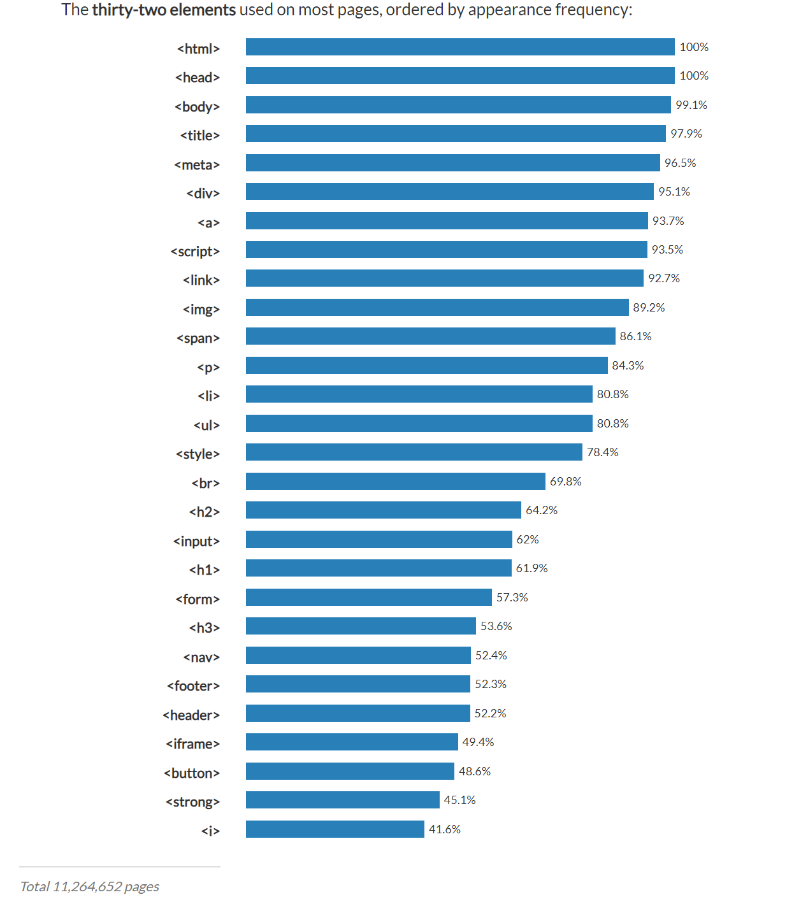

- HTML
- CSS
- JavaScript
0. 준비
먼저 웹 페이지를 만들기 위해 코딩을 하려면 에디터(editor)가 필요합니다.
에디터로는 Notepad++, Visual Studio Code, Vim, Eclipse, Atom 등이 있고 메모장을 사용해도 됩니다.
1. HTML

HyperText Markup Language의 약자로 웹을 만드는 대표 3가지(HTML, CSS, JavaScript) 언어 중 하나입니다.
1.1. tag
태그(tag)는 < (tag) > 같은 것을 부르는 이름입니다.
여는 태그와 닫는 태그를 구분하기 위해 닫는 태그에는 /를 붙입니다
태그 순위로는
입니다.
1.1.1. H(1~6)
글씨를 표시해 주고 크기를 조절할 수 있습니다.
H1의 크기
H2의 크기
H3의 크기
H4의 크기
H5의 크기
H6의 크기
사용법은
< H(1~6) > (text) < /H(1~6) > 입니다.
1.1.2. U
underline의 앞 글자만 따온 줄임말로 밑줄을 긋습니다.
사용법은
< U > (text) < /U > 입니다.
밑줄밑줄
1.1.3. li
li은 list를 줄인 말로
이렇게 뒤에 목록을 만들어 줍니다.
1.1.3.1. ol
Ordered List의 줄임말로 li 태그의 부모 태그이고 뒤에 있는 목록을 숫자로 만들어 줍니다.
사용법은
< ol >
ㅤㅤ< li >H< /li >
ㅤㅤ< li >C< /li >
ㅤㅤ< li >J< /li >
< /ol >
이고 결과는
- (text)
- (text)
- (text)
이렇게 됩니다.
크기를 늘리거나 줄이고 싶으면 1.1.1. 에서 나왔던 H(1~6)을 사용하면 됩니다.
예시
< ol >
ㅤㅤ< H3 >< li >H< /li >
ㅤㅤ< li >C< /li >
ㅤㅤ< li >J< /li >< /H3 >
< /ol >
결과
- H
- C
- J
1.1.3.2. ul
Unordered List의 줄임말로 li 태그의 부모 태그이고 목록과의 띄어쓰기를 해주는 태그입니다.
(text)
(text)
(text)
(text)
를 2개씩 분리하고 싶다면
방법은
< ul >
ㅤㅤ< li >(text)< /li >
ㅤㅤ< li >(text)< /li >
< /ul >
< ul >
ㅤㅤ< li >(text)< /li >
ㅤㅤ< li >(text)< /li >
< ul >
이고
결과는
ㅤ이렇게 됩니다.
1.1.4. img
image의 줄임말로